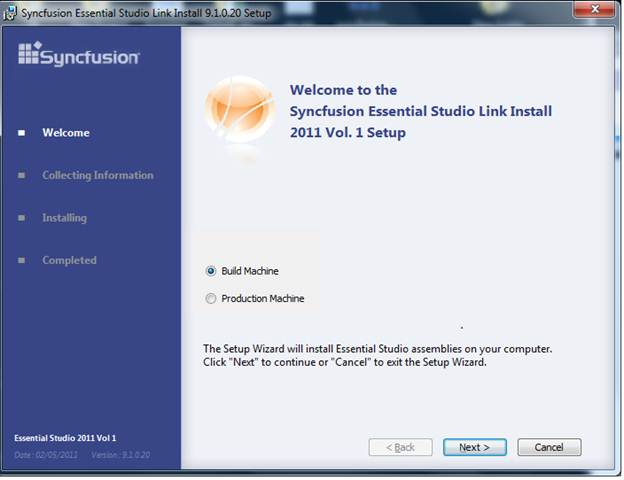
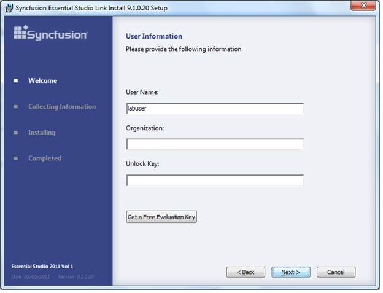
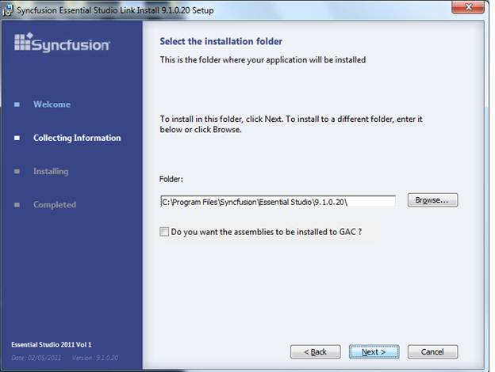

To compile projects that use Syncfusion controls in a build machine, Syncfusion helps to install the Link Install Setup. The setup installs Syncfusion assemblies into the target folder, and registers the product key to the registry. This allows you to compile a project, developed on a build machine. Please download the link install setup from the below location
http://files2.syncfusion.com/installs/v9.1.0.20/essentialstudiolinkinstall.exe
Installing on a build machine
1. Run Link Install Setup.
2. Choose the Build Machine option.
3. Click Next.

Figure 389: Link Install Setup Dialog box
4. A dialog box titled User Information opens
5. In the dialog box, provide user information and unlock key.
6. Click Next.

Figure 390:User Information dialog box
7. Select the installation folder
8. Under Folder, make sure the correct folder has been chosen.
9. Choose Install into GAC, if needed.
10. Click Next.

Figure 391:Installation folder dialog box
11. In the next window, click Finish to complete the setup.